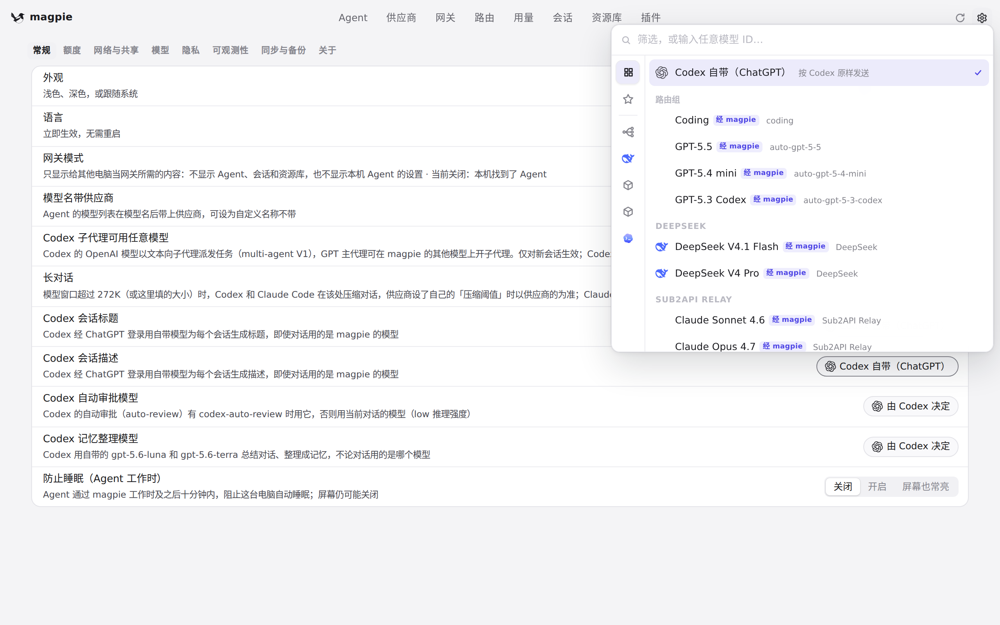
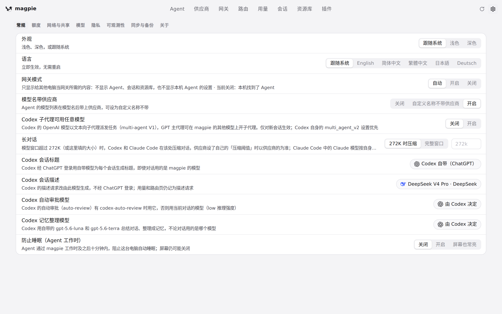

#1198 界面预览
commit 6c5b2a4 · 回到 PR · 网关开始独立处理 Codex 的会话描述请求（thread_description）：设置 › 常规 里「Codex 会话标题」下方新增一行「Codex 会话描述」，可从 Codex 自带的 ChatGPT 模型切换到 magpie 的任意模型或路由组；用量与路由中该用途显示为「描述」。
红线是鼠标走过的轨迹，红色圆环是一次点击；底部文字是这一步在做什么。空格暂停，← → 逐段查看。
设置里的 Codex 会话描述行 · 「Codex 会话标题」下方新增的「Codex 会话描述」一行

设置里的 Codex 会话描述行 · 展开的选择列表，可以看看都有哪些项

设置里的 Codex 会话描述行 · 选完之后这一行，以及它上方「Codex 会话标题」那一行